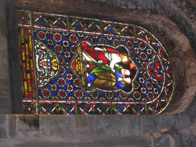
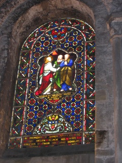

|

|
 |
| 4.8. Espelhar uma Imagem |

|
4.10. Separando um objeto do seu plano de fundo |
Images that are taken with digital cameras sometimes need to be rotated. To do this, select → → (or counter-clockwise) from the main menu. The images below demonstrate a 90 degrees CCW rotation.
Figura 3.26. Exemplo para “Rotacionar uma imagem”

Imagem original

Imagem rotacionada em 90 graus em sentido anti-horário